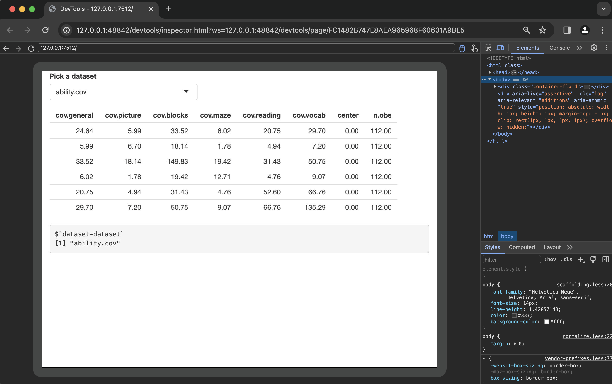
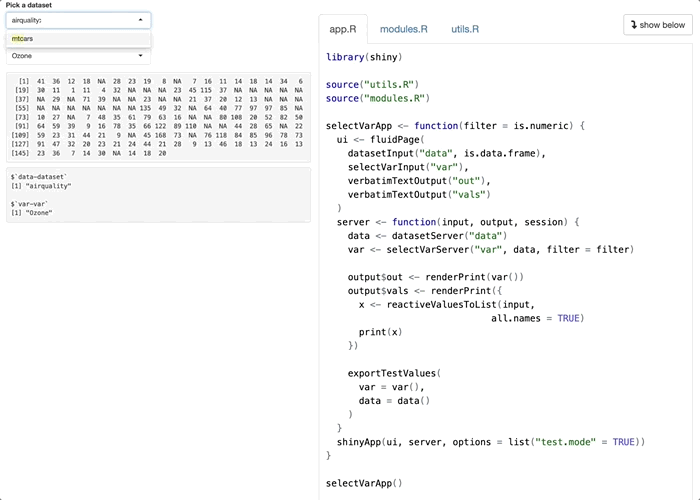
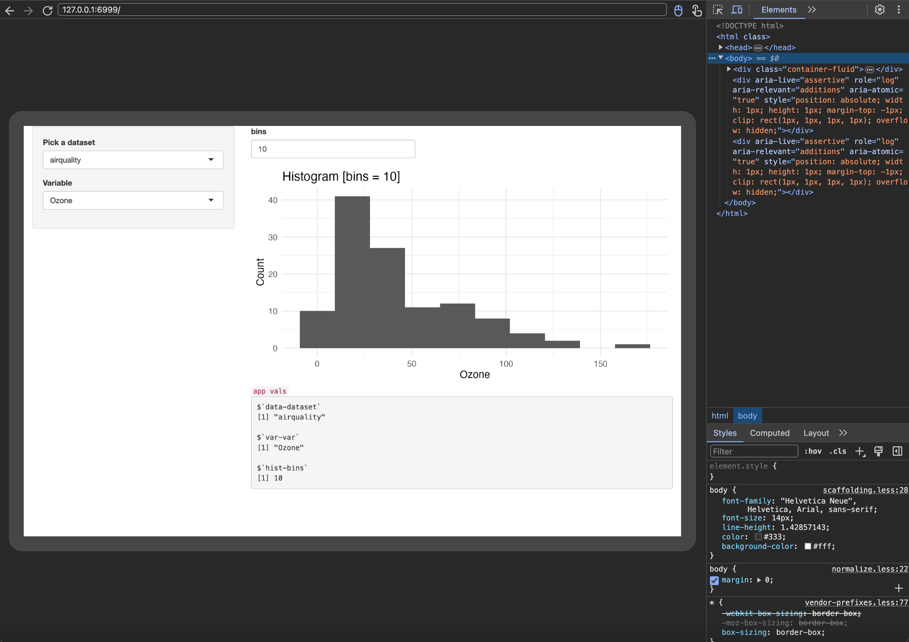

install.packages("remotes")
remotes::install_github(
"https://github.com/mjfrigaard/sapkgs",
ref = "mstsap"
)Shiny system tests with shinytest2
Part 4 (series): writing efficient system tests
shiny
testing
This is the fourth post in a series on testing Shiny applications. The previous posts have covered using BDD in unit tests, testing apps outside of an R package structure, and testing module server functions. In this post, we’ll be covering testing Shiny applications using testthat and shinytest2.

App-Packages
In the previous post, we stored the modules and applications from the Shiny modules chapter of Mastering Shiny in the mstsap branch of sapkgs, which you can install using the code below:
The msst2ap branch of sapkgs contains shinytest2 tests for the Shiny apps in mstsap (hence the name: Mastering Shiny shinytest2 app-package).
You can install msst2ap using the following:
install.packages("remotes")
remotes::install_github(
"https://github.com/mjfrigaard/sapkgs",
ref = "msst2ap"
)The beauty of R packages is that we can use the modules we developed in the previous mstsap branch as a dependency for msst2ap by adding this package to the Depends field of the DESCRIPTION file (this will automatically attach the mstsap to the search list when msst2ap is loaded).
devtools::load_all()ℹ Loading msst2ap
Loading required package: mstsapI’ve stored development versions of the applications in the inst/dev/ folder of mstsap:
inst/
└── dev/
├── datasetApp/
│ ├── DESCRIPTION
│ ├── app.R
│ └── modules.R
├── selectDataVarApp/
│ ├── DESCRIPTION
│ ├── README.md
│ ├── app.R
│ └── modules.R
└── selectVarApp/
├── DESCRIPTION
├── README.md
├── app.R
├── modules.R
└── utils.RUsing system.file()
The apps stored in the inst/dev/ directory of mstsap can be passed to the app_dir argument of AppDriver$new() with system.file():
test_that("mstsap::datasetApp", {
app_pth <- system.file("dev", "datasetApp", package = "mstsap")
app <- AppDriver$new(app_dir = app_pth, height = 600, width = 800)
app$view()
})
The first things we’ll check with our test is the window size we’ve provided and the system.file() path to the datasetApp in mstsap:
test_that("mstsap::datasetApp", {
app_pth <- system.file("dev", "datasetApp", package = "mstsap")
app <- AppDriver$new(app_dir = app_pth, height = 600, width = 800)
expect_equal(
object = app$get_window_size(),
expected = list(width = 800L, height = 600L))
expect_equal(
object = app$get_dir(),
expected = app_pth)
})Setting inputs
Next we’ll change dataset-dataset input from ability.cov to attitude using app$set_inputs() (Note that this uses the module notation above (i.e., "id-inputId"):
test_that("mstsap::datasetApp", {
app_pth <- system.file("dev", "datasetApp", package = "mstsap")
app <- AppDriver$new(app_dir = app_pth, height = 600, width = 800)
# previous tests omitted
app$set_inputs(`dataset-dataset` = "attitude")
})If you can see both windows, you’ll see the application values change in the Chromium browser:

app$set_inputs()
app$set_inputs()
Checking inputs
In the previous test, we used the expect_values() to capture a list of all the app values (input, output, export). We can also capture these values in a list inside the test by including a call to app$get_values() and assigning the output to app_values.
test_that("mstsap::datasetApp", {
app_pth <- system.file("dev", "datasetApp", package = "mstsap")
app <- AppDriver$new(app_dir = app_pth, height = 600, width = 800)
# previous tests omitted
app$set_inputs(`dataset-dataset` = "attitude")
app_values <- app$get_values()
})app_values has a similar structure to the .json snapshot covered above (i.e., with input, output, and export):
str(app_values)List of 3
$ input :List of 1
..$ dataset-dataset: chr "attitude"
$ output:List of 2
..$ data: chr "<table class = 'table shiny-table table- spacing-s' style = 'width:auto;'>\n<thead> <tr"..
..$ vals: chr "$`dataset-dataset`\n[1] \"attitude\"\n"
$ export: Named list()We can use waldo::compare() to verify the input in app_values to verify the value that we changed with app$set_inputs()
waldo::compare(
x = app_values$input$`dataset-dataset`,
y = "attitude"
)✔ No differenceswaldo::compare() can easily be adapted to a new test expectation:
test_that("mstsap::datasetApp", {
app_pth <- system.file("dev", "datasetApp", package = "mstsap")
app <- AppDriver$new(app_dir = app_pth, height = 600, width = 800)
# previous tests omitted
app$set_inputs(`dataset-dataset` = "attitude")
app_values <- app$get_values()
expect_equal(
object = app_values$input$`dataset-dataset`,
expected = "attitude"
)
})At the end of the test, I’ll add a call app$stop() to close the Chromium app.
test_that("mstsap::datasetApp", {
app_pth <- system.file("dev", "datasetApp", package = "mstsap")
app <- AppDriver$new(app_dir = app_pth, height = 600, width = 800)
expect_equal(
object = app$get_window_size(),
expected = list(width = 800L, height = 600L))
expect_equal(
object = app$get_dir(),
expected = app_pth)
app$set_inputs(`dataset-dataset` = "attitude")
app_values <- app$get_values()
expect_equal(
object = app_values$input$`dataset-dataset`,
expected = "attitude")
app$stop()
})Exporting test values
The shinytest2 documentation repeatedly1 recommends2 exporting test values from Shiny applications. We’ll use the application stored in inst/dev/selectVarApp/ to explore exporting test values.
The application in the inst/dev/selectVarApp/ folder of mstsap includes a call to exportTestValues() and the test.mode option set to TRUE in the call to shinyApp().3
server <- function(input, output, session) {
data <- datasetServer("data")
var <- selectVarServer("var", data, filter = filter)
output$out <- renderTable(head(var()))
output$vals <- renderPrint({
x <- reactiveValuesToList(input,
all.names = TRUE
)
print(x)
})
exportTestValues(
var = var(),
data = data()
)
}The test for this application contains the same system.file() call to create the AppDriver object:
test_that("mstsap::selectVarApp", {
app_pth <- system.file("dev", "selectVarApp", package = "mstsap")
app <- AppDriver$new(app_pth, height = 1200, width = 1000)
})After entering app$view() in the Console, the application opens in the Chromium headless browser again:
app$view()We can see selectVarApp has been launched in showcase mode, so the README and code files are displayed in the UI.

app$view()
selectVarApp() application with app$view()
In our test file, we’ll use app$set_values() to change the $`data-dataset` and $`var-var` inputs:
test_that("mstsap::selectVarApp", {
app_pth <- system.file("dev", "selectVarApp", package = "mstsap")
app <- AppDriver$new(app_pth, height = 1200, width = 1000)
app$set_inputs(`data-dataset` = "mtcars")
})- 1
-
Change
$`data-dataset`tomtcars
We’ll also change the variable input from mpg to wt and verify the output in the UI:
test_that("mstsap::selectVarApp", {
app <- AppDriver$new(
system.file("dev", "selectVarApp",
package = "mstsap"
),
height = 1200,
width = 1000
)
app$set_inputs(`data-dataset` = "mtcars")
app$set_inputs(`var-var` = "wt")
})- 1
-
Change
$`data-dataset`tomtcars - 2
-
Change
$`var-var`towt
The printed reactiveValuesToList() is updated UI when the selectInput() changes:

data-dataset
selectVarApp() after setting data-dataset and var-var with app$set_inputs()
Getting values
We’ll use app$get_values() to store the exported input, output, and export test values in app_values:
test_that("mstsap::selectVarApp", {
app <- AppDriver$new(
system.file("dev", "selectVarApp",
package = "mstsap"
),
height = 1200,
width = 1000
)
app$set_inputs(`data-dataset` = "mtcars")
app$set_inputs(`var-var` = "wt")
app_values <- app$get_values()
})- 1
-
Change
$`data-dataset`tomtcars - 2
-
Change
$`var-var`towt - 3
-
Assign to
app_valueslist
app_values is a list (similar to the .json snapshot file), but now we’ve explicitly exported values from the server in selectVarApp():
names(app_values$export)[1] "data" "var" Expectations
We can use app_values to verify the structure of each exported object:
datashould be adata.frame()
testthat::expect_true(
object = is.data.frame(app_values$export$data)
)varshould be a numeric vector:
expect_true(
object = is.numeric(app_values$export$var)
)Once again, we end the test with a call to app$stop(). The completed test for selectVarApp() is below:
show/hide mstsap::selectVarApp test
test_that("mstsap::selectVarApp", {
app_pth <- system.file("dev", "selectVarApp", package = "mstsap")
app <- AppDriver$new(app_pth, height = 1200, width = 1000)
# app$view()
expect_equal(app$get_window_size(),
list(width = 1000L, height = 1200L))
expect_equal(app$get_dir(), app_pth)
app$set_inputs(`data-dataset` = "mtcars")
app$set_inputs(`var-var` = "wt")
app_values <- app$get_values()
expect_true(
object = is.data.frame(app_values$export$data))
expect_true(
object = is.numeric(app_values$export$var))
app$stop()
})Testing complex outputs
The msst2ap branch has the histogramApp() from Mastering Shiny in inst/dev/histogramApp/, and a ggplot2 version of the histogramApp() in the inst/dev/ggHistApp/ folder (view contents here):
inst
└── dev
├── ggHistApp
│ ├── DESCRIPTION
│ ├── R
│ │ └── modules.R
│ ├── README.md
│ └── app.R
└── histogramApp
├── DESCRIPTION
├── R
│ └── modules.R
├── README.md
└── app.R
6 directories, 8 files
histogramApp()

ggHistApp()
histogramApp() vs. ggHistApp()
Testing reactive values
The module server functions in histogramApp() return two values: data and x:
show/hide values in msst2ap::histogramApp() server
server <- function(input, output, session) {
data <- datasetServer("data")
x <- selectVarServer("var", data)
histogramServer("hist", x)
# remaining code omitted
}data is returned reactive from datasetServer() and becomes an input parameter for selectVarServer(), and x is the returned reactive.
Both of these are reactive values, but they aren’t treated like returned values from the reactive() function (i.e., they don’t have parentheses). These are passed in the server as reactive expressions, which we can confirm using exportTestValues():
show/hide msst2ap::histogramApp() server
server <- function(input, output, session) {
data <- datasetServer("data")
x <- selectVarServer("var", data)
histogramServer("hist", x)
# remaining code omitted
exportTestValues(
data = data,
x = x
)
}- 1
-
We’ve also added
options(shiny.testmode = TRUE)to the top of theapp.Rfile.
In the test for histogramApp(), we’ll create the app with AppDriver$new() and change the three inputs using app$set_inputs():
show/hide msst2ap::histogramApp() server
test_that("{shinytest2} recording: histogramApp", {
app_pth <- system.file("dev", "histogramApp",
package = "msst2ap")
app <- AppDriver$new(app_pth, height = 750, width = 1200)
app$set_inputs(`data-dataset` = "attitude")
app$set_inputs(`var-var` = "privileges")
app$set_inputs(`hist-bins` = 15)
app_values <- app$get_values()
names(app_values)
})[1] "data" "x" We’ll test is these are reactive functions by combining rlang::is_function() and shiny::is.reactive():
show/hide msst2ap::histogramApp() values
test_that("{shinytest2} recording: histogramApp", {
app_pth <- system.file("dev", "histogramApp",
package = "msst2ap")
app <- AppDriver$new(app_pth, height = 750, width = 1200)
app$set_inputs(`data-dataset` = "attitude")
app$set_inputs(`var-var` = "privileges")
app$set_inputs(`hist-bins` = 15)
app_values <- app$get_values()
names(app_values)
expect_equal(
rlang::is_function(app_values$export$data),
shiny::is.reactive(app_values$export$data))
expect_equal(
rlang::is_function(app_values$export$x),
shiny::is.reactive(app_values$export$x))
})Using app logs
shinytest2 also has the handy get_logs() that allows us to check the logs for specific functionality. Below is the output from get_logs() from histogramApp():
show/hide msst2ap::histogramApp() logs
test_that("{shinytest2} recording: histogramApp", {
app_pth <- system.file("dev", "histogramApp",
package = "msst2ap")
app <- AppDriver$new(app_pth, height = 750, width = 1200)
app$set_inputs(`data-dataset` = "attitude")
app$set_inputs(`var-var` = "privileges")
app$set_inputs(`hist-bins` = 15)
app_logs <- app$get_logs()
str(app_logs)
})- 1
- Create app logs
- 2
- View log structure
Classes ‘shinytest2_log’ and 'data.frame': 56 obs. of 5 variables:
$ workerid : chr NA NA NA NA ...
$ timestamp: POSIXct, format: "2024-03-31 04:47:41" "2024-03-31 04:47:41" ...
$ location : chr "shinytest2" "shinytest2" "shinytest2" "shinytest2" ...
$ level : chr "info" "info" "info" "info" ...
$ message : chr "Start AppDriver initialization" "Starting Shiny app" "Creating "..After changing the three inputs with set_inputs(), we can check the output to see these actions were included in the logs:
show/hide msst2ap::histogramApp() logs
test_that("{shinytest2} recording: histogramApp", {
app_pth <- system.file("dev", "histogramApp",
package = "msst2ap")
app <- AppDriver$new(app_pth, height = 750, width = 1200)
app$set_inputs(`data-dataset` = "attitude")
app$set_inputs(`var-var` = "privileges")
app$set_inputs(`hist-bins` = 15)
app_logs <- app$get_logs()
# str(app_logs)
ds_msg <- subset(app_logs,
message == "Setting inputs: 'data-dataset'")
expect_equal(nrow(ds_msg), 1L)
var_msg <- subset(app_logs,
message == "Setting inputs: 'var-var'")
expect_equal(nrow(var_msg), 1L)
hist_msg <- subset(app_logs,
message == "Setting inputs: 'hist-bins'")
expect_equal(nrow(hist_msg), 1L)
})- 1
-
Create app logs
- 2
-
Create and test dataset
- 3
-
Create and test variable
- 4
- Create and test bins
Logs can also be passed from the test to the application using log_message().
Verify initial inputs
The ggHistApp() app is similar to histogramApp(), but instead of passing a reactive vector to hist(), ggHistServer() passes a reactive one-column data.frame (x()) to the ggplot2 functions. We’ll add exportTestValues() to a development version of ggHistServer() in inst/dev/: 4
show/hide ggHistServer()
ggHistServer <- function(id, x, title = reactive("Histogram")) {
stopifnot(is.reactive(x))
stopifnot(is.reactive(title))
moduleServer(id, function(input, output, session) {
gg2_plot <- reactive({
ggplot2::ggplot(
mapping =
ggplot2::aes(purrr::as_vector(x()))
) +
ggplot2::geom_histogram(bins = input$bins) +
ggplot2::labs(
title = paste0(title(), " [bins = ", input$bins, "]"),
y = "Count",
x = names(x())
) +
ggplot2::theme_minimal()
})
observe({
output$hist <- renderPlot({gg2_plot()}, res = 124)
}) |>
bindEvent(c(x(), title(), input$bins))
exportTestValues(
bins = input$bins,
x = x(),
title = title()
)
# remaining code omitted
})
}- 1
-
Build
ggplot2graph - 2
-
Render plot
- 3
-
Export bins,
x()andtitle()
The version of ggHistServer() above replaces the ggHistServer() used in the standalone app function).5 The remaining modules from mstsap are explicitly namespaced. The code below identifies the location of each module in ggHistApp(): 6
show/hide ggHistApp()
ggHistApp <- function() {
ui <- fluidPage(
sidebarLayout(
sidebarPanel(
mstsap::datasetInput("data", is.data.frame),
mstsap::selectVarInput("var"),
),
mainPanel(
histogramOutput("hist"),
code("app vals"),
verbatimTextOutput("vals")
)
)
)
server <- function(input, output, session) {
data <- mstsap::datasetServer("data")
x <- ggSelectVarServer("var", data)
ggHistServer("hist", x)
output$vals <- renderPrint({
x <- reactiveValuesToList(input,
all.names = TRUE)
print(x, width = 30, max.levels = NULL)},
width = 30)
}
exportTestValues(
x = x(),
data = data(),
react_x = x,
react_data = data
)
shinyApp(ui, server)
}
ggHistApp()- 1
-
From
R/histogramOutput.R
- 2
-
From
R/ggSelectVarServer.R
- 3
-
From
inst/dev/ggHistApp/R/modules.R - 4
- Exported test values
In the test-shinytest2-ggHistApp.R test file, I’ll verify the vdiffr package is installed, then create the AppDriver object with a call to system.file() and set the height and width:
test_that("{shinytest2}: ggHistApp", {
skip_if_not_installed("vdiffr")
app_pth <- system.file("dev", "ggHistApp",
package = "msst2ap")
app <- AppDriver$new(app_pth,
height = 750, width = 1200)
})View the application in the Chromium browser by running app$view() in the Console:
app$view()

app$view()
ggHistApp() application with app$view()
The first expectations in the example test the default input values with app$get_value(input = ):
# initial values----
# verify initial values
init_ds <- app$get_value(input = 'data-dataset')
init_var <- app$get_value(input = 'var-var')
# is the variable from the dataset?
expect_true(
init_var %in% names(get(init_ds, "package:datasets"))
)
init_bins <- app$get_value(input = 'hist-bins')
expect_true(is.numeric(init_bins))Set and verify export
Next, we check chamging the input values with app$set_values(id-inputId):
# set values ----
# dataset
app$set_inputs(`data-dataset` = 'mtcars')
new_data <- app$get_value(input = "data-dataset")
# Verify new data
expect_equal(object = new_data,
expected = "mtcars")
app$set_inputs(`var-var` = 'disp')
new_var <- app$get_value(input = "var-var")
# Verify new variable
expect_equal(object = new_var,
expected = "disp")Verify exports
Finally, we’ll test the exported values by creating app$get_values()$export and checking it’s contents:
# Exported objects ----
exp_values <- app$get_values()$export
# check reactives/functions
expect_true(shiny::is.reactive(exp_values$react_data))
expect_true(shiny::is.reactive(exp_values$react_x))
expect_true(rlang::is_function(exp_values$react_data))
expect_true(rlang::is_function(exp_values$react_x))
# check data
expect_true(is.data.frame(exp_values$data))
expect_true(ncol(exp_values$x) == 1)
expect_equal(exp_values$data, mtcars)
expect_equal(exp_values$x, mtcars['disp'])Verify plot with vdiffr
Now we verify the plot with the exported plot_obj (in the hist module) with expect_doppelganger() from the vdiffr package.
# Verify plot ----
gg2_plot <- app$get_value(output = "hist-hist")
expect_equal(gg2_plot$alt, "Plot object")
vdiffr::expect_doppelganger(
title = "mtcars_disp_plot",
fig = ggplot2::ggplot(data = exp_values$data,
mapping =
ggplot2::aes(x = disp)
) +
ggplot2::geom_histogram(bins = exp_values$`hist-bins`) +
ggplot2::labs(
title = paste0(exp_values$`hist-title`,
" [bins = ",
exp_values$`hist-bins`, "]"),
y = "Count",
x = names(exp_values$x)
) +
ggplot2::theme_minimal()
)- 1
-
Check the rendered plot object
- 2
-
ggHistApp()renders aggplot2graph, which makes it easier to demonstrate this example of checking a plot from theshinytest2package website.
I saved the test file and ran the test to confirm the snapshot file was created in tests/testthat/_snaps/:
── Warning (test-shinytest2-ggHistApp.R:58:3): {shinytest2}: ggHistApp ─────────
Adding new file snapshot: 'tests/testthat/_snaps/mtcars_disp_plot.svg'Set, get, expect
The process above is repeated with new values passed to app$set_inputs() and verified with app$get_values():
- The
data-dataset,var-var, andhist-binsare updated again with new values.
# verify usaarrests_plot ----
app$set_inputs(`data-dataset` = "USArrests")
app$set_inputs(`var-var` = 'UrbanPop')
app$set_inputs(`hist-bins` = 15)- The updated values are exported automatically with
exportTestValues()and stored inexp_values:
# export values
exp_values <- app$get_values()$export- The new plot is verified again with
expect_doppelganger():
vdiffr::expect_doppelganger(
title = "usaarrests_plot",
fig = ggplot2::ggplot(data = exp_values$data,
mapping =
ggplot2::aes(x = UrbanPop)
) +
ggplot2::geom_histogram(bins = exp_values$`hist-bins`) +
ggplot2::labs(
title = paste0(exp_values$`hist-title`,
" [bins = ",
exp_values$`hist-bins`, "]"),
y = "Count",
x = names(exp_values$x)
) +
ggplot2::theme_minimal()
)Now that we have a template, we can set, get, and expect multiple plot snapshots:
## SET -----
app$set_inputs(`data-dataset` = "sleep")
app$set_inputs(`var-var` = 'extra')
app$set_inputs(`hist-bins` = 8)
# GET ----
exp_values <- app$get_values()$export
# EXPECT ----
vdiffr::expect_doppelganger(
title = "sleep_extra_plot",
fig = ggplot2::ggplot(data = exp_values$data,
mapping =
ggplot2::aes(x = extra)
) +
ggplot2::geom_histogram(bins = exp_values$`hist-bins`) +
ggplot2::labs(
title = paste0(exp_values$`hist-title`,
" [bins = ",
exp_values$`hist-bins`, "]"),
y = "Count",
x = names(exp_values$x)
) +
ggplot2::theme_minimal()
)The initial run of this test will save the snapshot file to tests/testthat/_snaps/:
tests/testthat/_snaps/
└── shinytest2-ggHistApp
├── mtcars-disp-plot.svg
├── sleep-extra-plot.svg
└── usaarrests-plot.svg
2 directories, 3 filesResults
The final results of devtools::test() in msst2ap are below:
devtools::test()ℹ Testing msst2ap
Loading required package: shiny
✔ | F W S OK | Context
✔ | 3 | shinytest2-datasetApp [3.5s]
✔ | 16 | shinytest2-ggHistApp [9.3s]
✔ | 5 | shinytest2-histogramApp [3.8s]
✔ | 4 | shinytest2-selectVarApp [2.5s]
══ Results ═══════════════════
Duration: 19.1 s
[ FAIL 0 | WARN 0 | SKIP 0 | PASS 28 ]Recap
This post has covered creating tests with testthat and shinytest2 for an app-package containing a Shiny application. In general, shinytest2 is designed for end-to-end testing of Shiny applications. System tests (or regression testing) can capture the state of a Shiny app (input, output, and exported values) during user interactions and compare them with a previous state (i.e., snapshots). As we can see, shinytest2 makes it easier to test specific app behaviors and set expectations iteratively with the AppDriver makes.
shinytest2 tests can also simulate user interaction in a way that testServer() tests can’t, such as waiting for reactive outputs to update after the input changes, clicking on action buttons, etc. shinytest2 can also be resource-intensive, so it’s recommended to write these tests after you’ve completed the standard testthat unit tests and testServer() tests.
Other things to consider when writing shinytest2 tests include:
Define What to Test: Since Shiny apps are interactive, so
shinytest2tests should simulate user interaction as much as possible. The tests should focus on key user interactions and the output they should generate.shinytest2provides functions for simulating user clicks, inputs, and other interactions. Not every interaction needs to be tested, but crucial ones and those that handle complex logic should be.Organize Your Tests & Use Descriptive Test Names: Organize your tests into separate files based on the app or feature they test. Each test should have a descriptive name that clarifies what the test is for. Organizing your test files with unambiguous names will make it easier to manage multiple tests, and it will make it easier to understand what’s going wrong when a test fails.
Create snapshots for expected outputs: Use snapshot files to verify that an app’s output matches the expected results.
AppDriver$expect_values()generates.jsonand.pngsnapshot files for the application. The .json file containsinput,output, andexportvalues, and the .png file is a debug screenshot, which records how the app looked when the values where captured. These files can then be compared to a baseline snapshot.Export app values: While snapshot files are great for detecting changes, it’s important to remember that “differences in the captured screenshot will never cause test failures.” Manually inspecting the snapshot .png files during test development can also be time-consuming and tedious. Wherever possible, export app values and compare them against expected reference values.
Footnotes
“In some cases, it’s useful to snapshot some bits of internal state of an application – state that’s not reflected directly in the inputs or outputs. This can be done by exporting values.” -
shinytest2documentation↩︎“It cannot be recommended enough to use
exportTestValues()to test your Shiny app’s reactive values.” -shinytest2documentation↩︎This section replicates these test examples from
shinytest2using theggHistApp().↩︎This version is loaded from a
inst/dev/histogramApp/R/modules.Rfile.↩︎This version is loaded from a
inst/dev/histogramApp/R/app.Rfile.↩︎